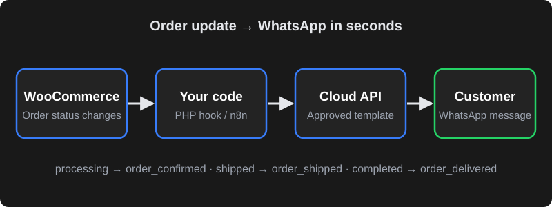

Why send order updates on WhatsApp?
WooCommerce sends order emails by default, but many Indian customers rarely open them — or they land in Promotions or spam. WhatsApp messages are seen quickly, and customers can reply in the same chat if they have a question about their order. That usually means fewer "where is my order?" calls and a more trustworthy buying experience.
Typical messages a store sends automatically:
- Order confirmation — "Thanks, Priya! Your order #1045 for ₹2,499 is confirmed."
- Payment reminder for pending or cash-on-delivery orders.
- Shipped — courier name and tracking link.
- Delivered / completed — with a link to leave a review.
- Cancelled or refunded — so the customer is never left guessing.
Three ways to connect WooCommerce and WhatsApp
| Option | How it works | Good for | Watch out for |
|---|---|---|---|
| WordPress plugin + a WhatsApp provider | A plugin connects WooCommerce to a provider (BSP) that sends messages for you. | Non-technical owners who want a quick setup. | Monthly fees on top of Meta charges; some plugins use unofficial WhatsApp Web methods that can get numbers banned. |
| Official Cloud API + custom code | A small PHP snippet (in a child theme or WPCode) calls Meta's API when an order status changes. | Stores that want full control and no middleman fees. | Needs a developer for setup and template changes. |
| Automation tool (n8n, Make, Zapier) | A WooCommerce webhook triggers a workflow that calls the WhatsApp API. | Businesses that also want to update Google Sheets, CRM or Slack. | One more tool to maintain; per-task pricing on some platforms. |
Whichever route you choose, insist on the official WhatsApp Business Platform. Tools that automate WhatsApp Web or the normal app break Meta's terms and put your number at risk.

Step 1: Set up Meta and the WhatsApp Cloud API
- Create a Meta Business portfolio (business.facebook.com) using your business name exactly as it appears on your documents.
- Create an app at developers.facebook.com, choose the Business type and add the WhatsApp product. Meta gives you a test number to experiment with.
- Add your real phone number to the WhatsApp Business Account. It must be able to receive an SMS or call for verification and should not be active on the normal WhatsApp app at the same time.
- Note two IDs: the Phone number ID and the WhatsApp Business Account ID. Your code needs the phone number ID.
- Create a permanent access token: in Business Settings create a System user, give it access to the app and WhatsApp account, and generate a token with the
whatsapp_business_messagingandwhatsapp_business_managementpermissions. The temporary token on the app dashboard expires within a day — don't use it in production. - Complete business verification when Meta asks. Verification raises your messaging limits and lets you set a proper display name.
wp-config.php as a constant or in a secrets manager, and rotate it if it ever leaks.Step 2: Create and approve message templates
Business-initiated messages — and an order update is one, because you are messaging the customer first — must use a pre-approved template. Create them in WhatsApp Manager under Message templates.
- Choose the Utility category for order and shipping updates. Marketing language ("Get 20% off your next order!") inside a utility template can lead to rejection or re-categorisation.
- Use variables for the parts that change:
{{1}}for name,{{2}}for order number,{{3}}for amount. - Keep the language plain and transactional. Example: "Hi {{1}}, your order #{{2}} of ₹{{3}} is confirmed. We'll message you when it ships. – Sar Store"
- Add a URL button for tracking links if you use them; the tracking number can be a variable in the URL.
Approval is often quick but can take longer if the template is unclear. Create one template per status and note each template's exact name and language code (for example en or en_US) — the API call must match them exactly.
Step 3: Map order statuses to templates
| WooCommerce status | Template name (example) | Variables |
|---|---|---|
processing | order_confirmed | Name, order number, total |
on-hold / pending | payment_pending | Name, order number, payment link |
shipped (custom status) | order_shipped | Name, order number, courier, tracking |
completed | order_delivered | Name, order number, review link |
cancelled / refunded | order_cancelled | Name, order number |
WooCommerce has no "shipped" status out of the box. You can register a custom status with a small snippet or a plugin, or send the shipped message when your shipping plugin adds a tracking number.
Step 4: Send the message from WooCommerce (PHP)
Here is a simplified, illustrative snippet. It hooks into woocommerce_order_status_changed, formats the phone number with the country code and calls the Cloud API with wp_remote_post. Add it through a child theme's functions.php or a snippets plugin such as WPCode, and replace the placeholders.
// In wp-config.php (never in a public file):
// define( 'CS_WA_TOKEN', 'YOUR_PERMANENT_ACCESS_TOKEN' );
// define( 'CS_WA_PHONE_ID', 'YOUR_PHONE_NUMBER_ID' );
add_action( 'woocommerce_order_status_changed', function ( $order_id, $from, $to, $order ) {
$templates = array(
'processing' => 'order_confirmed',
'completed' => 'order_delivered',
'cancelled' => 'order_cancelled',
);
if ( empty( $templates[ $to ] ) || ! defined( 'CS_WA_TOKEN' ) ) {
return;
}
// Indian numbers: keep digits only, add 91 if the customer typed 10 digits.
$phone = preg_replace( '/\D/', '', $order->get_billing_phone() );
if ( strlen( $phone ) === 10 ) {
$phone = '91' . $phone;
}
$body = array(
'messaging_product' => 'whatsapp',
'to' => $phone,
'type' => 'template',
'template' => array(
'name' => $templates[ $to ],
'language' => array( 'code' => 'en' ),
'components' => array( array(
'type' => 'body',
'parameters' => array(
array( 'type' => 'text', 'text' => $order->get_billing_first_name() ),
array( 'type' => 'text', 'text' => $order->get_order_number() ),
array( 'type' => 'text', 'text' => $order->get_total() ),
),
) ),
),
);
$response = wp_remote_post(
'https://graph.facebook.com/v21.0/' . CS_WA_PHONE_ID . '/messages',
array(
'headers' => array(
'Authorization' => 'Bearer ' . CS_WA_TOKEN,
'Content-Type' => 'application/json',
),
'body' => wp_json_encode( $body ),
'timeout' => 15,
)
);
// Keep a record on the order so staff can see what was sent.
$code = is_wp_error( $response ) ? 'error' : wp_remote_retrieve_response_code( $response );
$order->add_order_note( 'WhatsApp "' . $templates[ $to ] . '" sent – HTTP ' . $code );
}, 10, 4 );Notes on the snippet:
- The Graph API version in the URL (
v21.0above) changes over time — use a current version from Meta's documentation. - The number of parameters must match the number of variables in the approved template, in the same order.
- For high-volume stores, send messages through a background queue (for example Action Scheduler, which ships with WooCommerce) so checkout never waits on Meta's API.
Step 5: Test before going live
- Add your own number as a test recipient and place real test orders with cash on delivery.
- Change the order status manually in the admin and confirm each template arrives with the right name, number and amount.
- Check the order notes for the HTTP response. A
200means Meta accepted the message; delivery and read status come later through webhooks if you set them up. - Test numbers with spaces,
+91and a leading0, because customers type phone numbers in every possible format.
Common errors and how to fix them
| Problem | Likely cause | Fix |
|---|---|---|
| "Template does not exist" | Name or language code doesn't match, or template not approved yet. | Copy the exact name and language from WhatsApp Manager. |
| Parameter count mismatch | Template has 3 variables but code sends 2 (or 4). | Match the parameters to the template body exactly. |
| Message accepted but never delivered | Wrong number format, number not on WhatsApp, or quality/limit restrictions. | Use full international format (91XXXXXXXXXX) and check account quality in WhatsApp Manager. |
| Free-text message rejected | Outside the 24-hour customer service window. | Use an approved template; free-form replies are only allowed after the customer messages you. |
| Works for a day, then fails | Using the temporary token. | Generate a permanent system user token. |
What does it cost?
Using the Cloud API directly has no monthly platform fee from Meta, but Meta charges for template messages based on category (marketing, utility, authentication) and the recipient's country. Utility messages are generally cheaper than marketing messages, and replies within an open customer service window are generally free. Pricing changes from time to time, so check Meta's current rate card before estimating your monthly bill.
Your other costs are development time (or a plugin/provider subscription) and occasional maintenance when Meta updates its API versions. For most small and medium stores, the total is modest compared with the time saved answering order-status queries manually.
Frequently asked questions
Can I send WooCommerce order messages from my normal WhatsApp Business app?
Not automatically in a reliable, allowed way. The WhatsApp Business app is designed for manual chats. Automated order notifications should use the official WhatsApp Business Platform (Cloud API), either directly or through an approved provider.
Do I need a separate phone number for the WhatsApp API?
The number you connect to the API cannot be used on the regular WhatsApp app at the same time. Many stores use a new number for automation and keep their existing number for personal or manual chats.
Which template category should order updates use?
Order confirmations, shipping updates and delivery messages usually belong in the Utility category. Keep promotional wording out of these templates, or Meta may reject them or treat them as marketing.
Is it safe to put the access token in functions.php?
It is better to define the token in wp-config.php or a secrets manager and reference it from your code. Never commit the token to a public repository or share it in screenshots.
How long does the setup take?
If your Meta business details are ready, a basic setup with two or three templates often takes a few days, mostly waiting for verification and template approval. Custom statuses, tracking links and dashboards take longer.